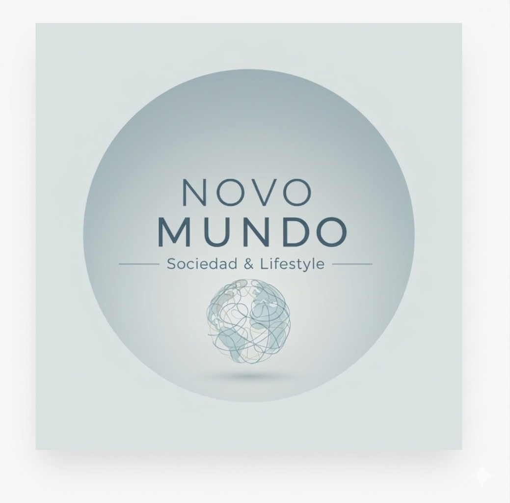

PODCAST
ClaudIA
Escucha el podcast que le ha cambiado la visión a ClaudIA

EP 01
En un mundo hiperconectado pero cada vez más solo, este episodio de Novo Mundo te ofrece cinco consejos prácticos para construir amistades reales y profundas.
Escuchar episodio
Duración: 16:35